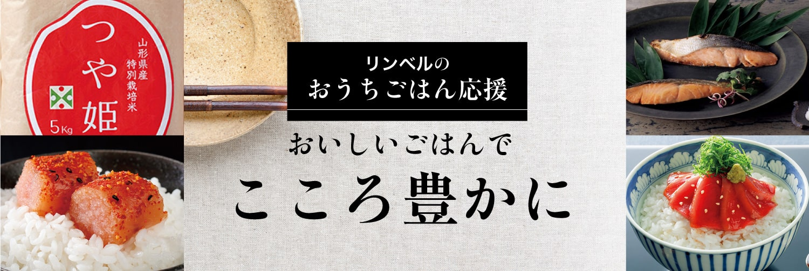
熱々の、白いご飯が食卓に並ぶこと。
ご飯が進むお気に入りの「お供」があること。
そんな当たり前が、一番心を豊かにしてくれます。
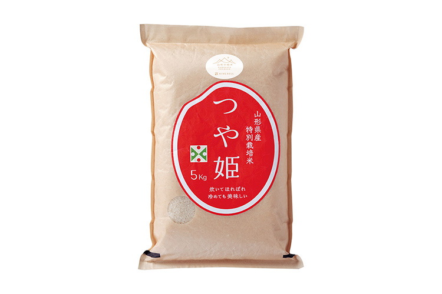
- 山形県 特別栽培米山形県置賜産 つや姫
- 4,320円（税込）〜
お米の粒がしっかりと大きく、つやつや輝いている炊きたての「つや姫」。その名にふさわしい美しさ。甘い香りにうっとりしながら口に含み、ひと粒ひと粒のもっちりとした食感を楽しみながら噛むうちに、お米が持つ本来の旨みと甘みが口いっぱいに広がります。
ここが「極み」
- 【特別栽培米】
- 節減対象農薬の使用回数が50％以下、化学肥料の窒素成分量が50%以下。
- 【厳選米】
- タンパク質含有率が、山形県基準よりも低い、乾物換算で6.7%以下。
- 【有機米】
- 化学合成農薬や化学肥料を3年以上使用せずに栽培。

-
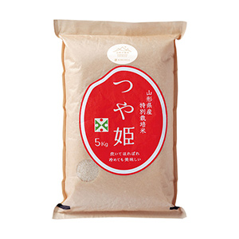
山形の極み 山形県 特別栽培米山形県置賜産 つや姫
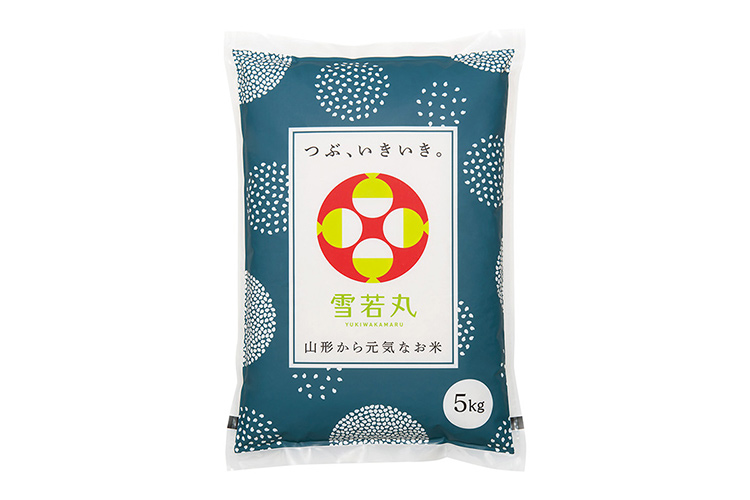
- 山形県 雪若丸
- 1,620円（税込）〜
『雪若丸』は、「はえぬき」や「つや姫」に次ぐ、山形県の新しいブランド米。キャッチフレーズに”つや姫の弟分”とあるように、その稲姿は男性的で、炊いた米粒は雪のように白く輝きます。味わいは上品で、どんな総菜にもよく合い、何より特徴的なのが、粘りがありながら噛み応えのある食感。栽培農家はまだ限られているため、希少な逸品となっています。
ここが「極み」
- 平成30年秋に本格デビュー。
- 白く美しく、大きい粒が特徴。
-
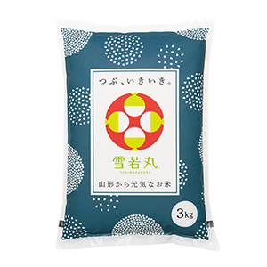
山形の極み 山形県 雪若丸
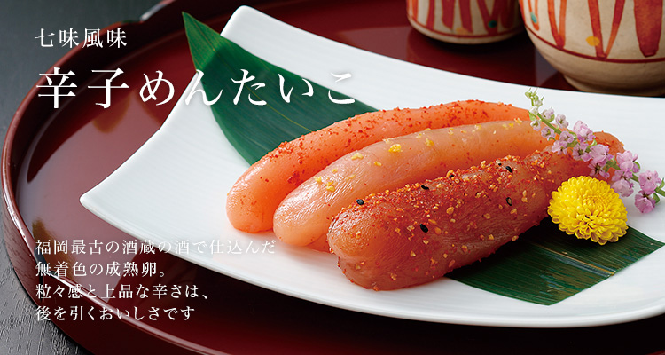
- 博多辛子めんたいこ
- 3,240円（税込）〜
極寒のベーリング海で漁獲される、産卵前のすけとうだらの粒子感あふれる「真子」のみを使用し、さまざまな味わいに仕上げました。老舗酒蔵の大吟醸酒を使った「大吟醸仕込み」。生柚子が爽やかな「柚子仕込み」。京都の香辛料専門店がブレンドした「七味風味」。
どれも、ご飯が至福の一皿になる逸品です。
ここが「極み」
- 極寒のベーリング海で獲れる、産卵前のすけとうだらの粒子感あふれる「真子」のみを使用。
- 延宝元年創業、福岡最古の酒藏『大賀酒造』の清酒｢玉出泉｣を使用。
- 調味液に、羅臼昆布、辛さの異なる２種類の唐辛子、粗挽き唐辛子をブレンド。
- 柚子風味の柚子は福岡県朝倉郡東峰村の香り高いものを使用。
- 七味風味は京都の香辛料専門店がブレンドした七味唐辛子をふんだんに使用。
-
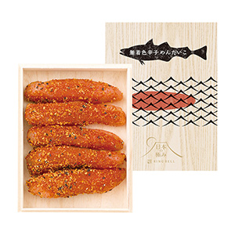
日本の極み 博多辛子めんたいこ
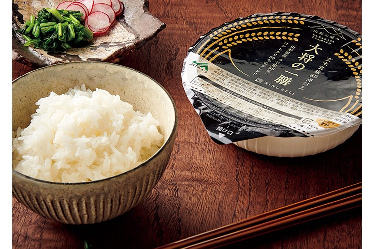
- 大将の一膳
- 1,080円（税込）〜
食味値数の高い、厳選された山形県産のブレンドで実現した「大将の一膳」。食味値とは、米のおいしさを表す指数のことで、アミロース、タンパク質、水分、脂肪酸度の4つを近赤外線分析計で成分測定し算出します。レンジで2分加熱するだけで、炊きたてのご飯の味を。
-
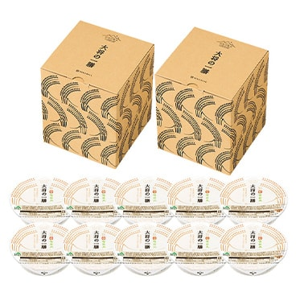
山形の極み 大将の一膳
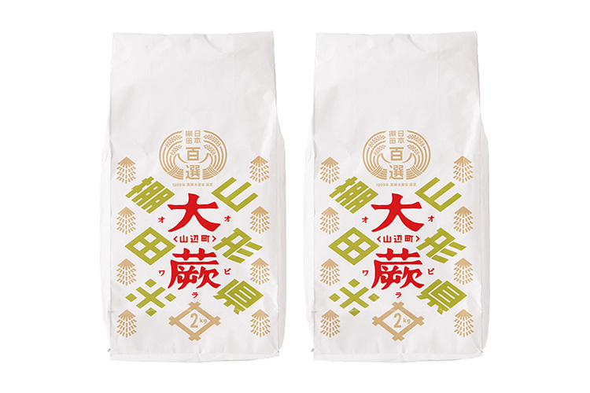
- 山形県産 里のゆき（棚田米）
- 2,700円（税込）〜
一般のうるち米にくらべてアミロースの含有量が低く、強い粘りが特徴の「里のゆき」。山形県オリジナルの低アミロース米で、お米の白さが里山に降る雪を思わせることから命名されました。冷めても変わらぬもちもち感がおいしいと評判のお米です。丹精込めて育てられる大蕨地区の棚田米をより深くご堪能いただけるよう、山形の有名イタリアン「アル・ケッチャーノ」の奥田政行シェフによる「大蕨棚田米をおいしく食べられるオリジナルレシピ」を、付録としていっしょにお届けします。
-
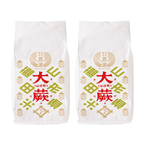
山形県産 里のゆき（棚田米）
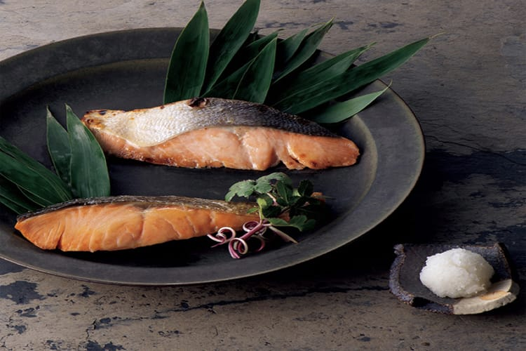
- 北海道 オホーツクの焼き魚セット
- 3,240円（税込）〜
オホーツク海産のサーモンは、回遊時期が他の地域よりも早いため、脂がのっているのが特徴。「焼魚」は都空酒な製法により、皮から塩がしみこみ、脂が溶けて身に浸透するようこだわりました。「西京焼」は京都の西京味噌と合わせることで旨みを増幅。どちらも80g
と厚めにカットし、250℃で焼き目をしっかりとつけています。
レンジで温めるだけでおいしくいただけます。
ここが「極み」
- 〈焼魚〉
- 北海道オホーツク海で、9月の一番脂ののった雄鮭のみに限定。
- うろこの向きを逆にして塩をすり込む、逆さかじお塩製法により、皮から塩がしみて、脂が溶け、身に浸透させる。
- 〈西京焼〉
- 京都の西京味噌と合わせることで、旨みが増す。
料理研究家やグルメライターも絶賛！
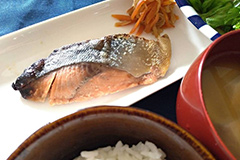
-
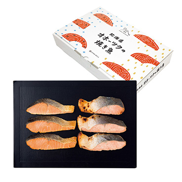
日本の極み 北海道 オホーツクの焼き魚セット
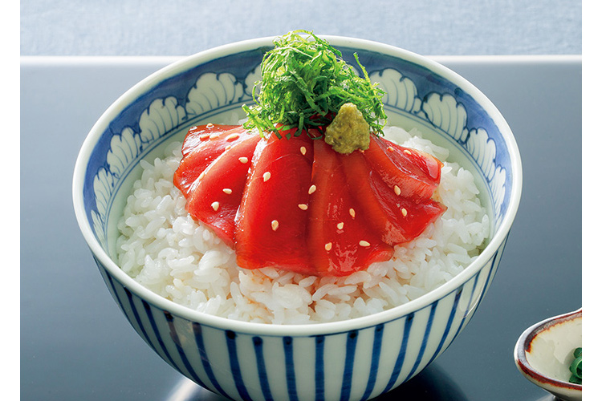
- 高知県 黒潮本まぐろ漬けセット
- 3,240円（税込）
サンゴが生息する高知県の透明度の高い海。その沖合の清浄な海域で、直径50メートル以上の大きな生簀と、早い潮流の中、たっぷり運動させた黒潮本まぐろを、漬け丼用に加工しました。専用のタレは有機大豆・小麦で作った有機醤油を使い、風味豊かに仕上げています。
まぐろと専用のタレが、絶妙なバランスで作り出す味は、ご自宅ではなかなか味わえなかった感動をお届けします。
ここが「極み」
- 鮮度を閉じ込め旨みを逃さない「リキッド凍結」により、魚の細胞壁を壊さずに凍結。
- ドリップを極限まで減らし、食感を損なわない。
- まぐろとの相性抜群の、こだわりのタレ。
-
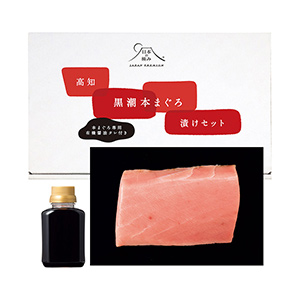
日本の極み 高知県 黒潮本まぐろ漬けセット
料理研究家やグルメライターも絶賛！
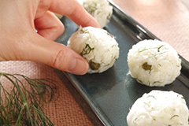
炊いてほれぼれ 冷めても美味しい
山形の極み つや姫
ハーブ料理研究家 若井めぐみさん
詳しくはこちら